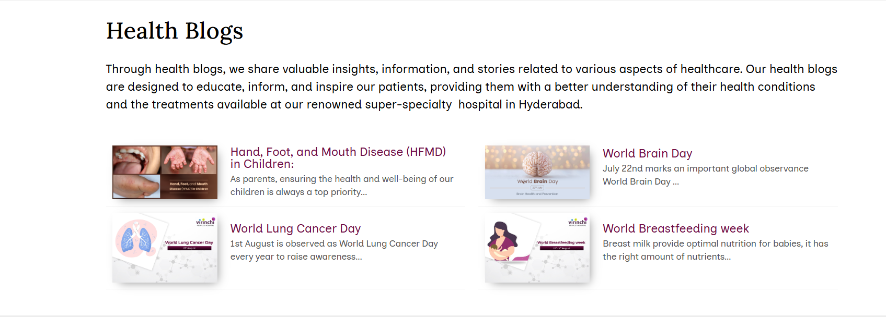

Welcome to Our Hospital
Your health is our priority
Our Services
We provide quality healthcare with experienced professionals.
Emergency Care
Specialist Doctors
ABOUT SMART HOSPITALS
SMART HOSPITAL Foundation was registered in the year 2002 at Hyderabad under the Public Charitable Trust Act (Reg. no. 1607-IV-32 of 2002). The Foundation works towards saving lives by providing quality health care to the most deserving sections of the society.
According to a WHO report, the Doctor: Patient in India is 1:1674 – much below WHO’s prescribed ratio of 1:1000. These statistics, combined with the change in lifestyle of Indian youth (which results in less time to attend to the sick), indicate towards a huge demand for home healthcare for the elderly.
With an aging population and the rapid increase in various types of chronic illnesses, there is an urgent need for quality healthcare. Private sector medical institutions and government hospitals are unable to cope since the average Indian finds them not easy to access.
Skilling people to aid in home healthcare is one major components of home based care. There are many advantages that home healthcare services offer and for which customers are happy and willing to pay for, including: Convenience – cuts down on travel time and expense; Provides personalized attention on a one on one basis & Recovering in the familiar and comfortable environment of one’s own home.
